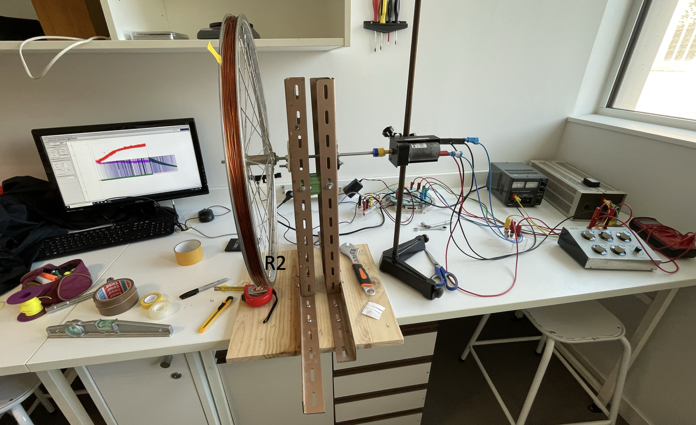
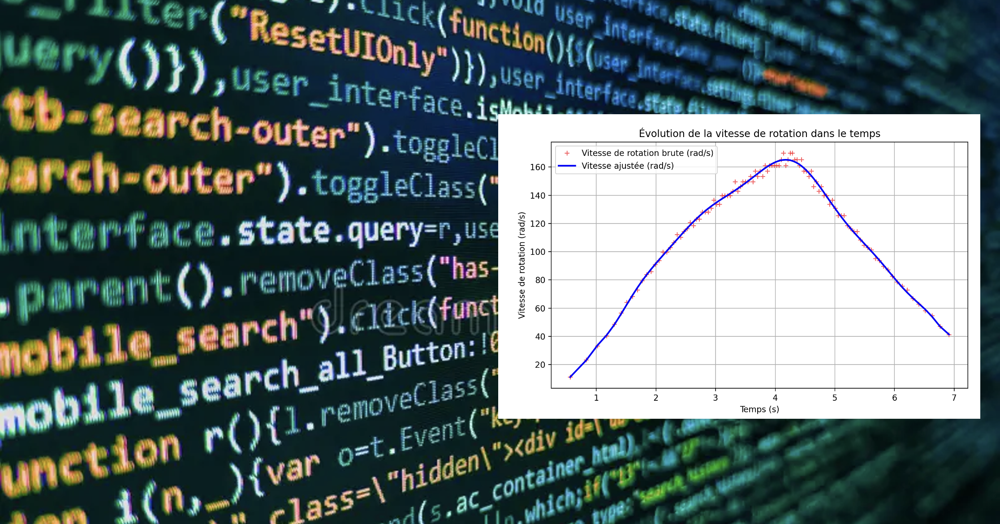
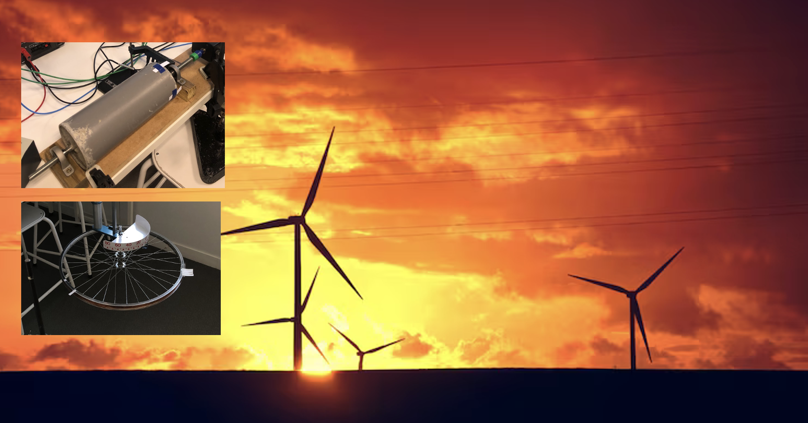

CPGE PIERRE DE FERMAT · TIPE SESSION 2025 CPGE PIERRE DE FERMAT · TIPE 2025 SESSION
Stockage d'Énergie par Volant d'Inertie Flywheel Energy Storage System
Étude expérimentale d'un système inertiel de stockage d'énergie (SISE) pour réguler la fréquence du réseau électrique et pallier l'intermittence des énergies renouvelables. Experimental investigation of a Flywheel Energy Storage System (FESS) to stabilize grid frequency and mitigate renewable energy intermittency.
Banc d'Essai & Mesure de l'Inertie J Test Bench & Moment of Inertia J
Nous avons conçu un banc d'essai couplant une machine à courant continu à des rotors interchangeables. La caractérisation du moment d'inertie J de chaque volant a été menée expérimentalement par pendule de torsion : We designed a laboratory test bench coupling a DC motor to interchangeable rotors. The moment of inertia J was characterized experimentally using a torsion pendulum:
J = (C · T²) / (4π²)
L'instrumentation synchronisée sous Latis Pro enregistre en temps réel la vitesse angulaire via une fourche optique et les grandeurs électriques (tensions et courants moteur). Synchronized sensors in Latis Pro recorded real-time angular velocity via an optical photogate and electrical parameters (voltage and current).

Traitement du Signal sous Python Signal Processing & Python Pipeline
Pour exploiter les séries temporelles brutes, j'ai développé un pipeline d'analyse sous Python (NumPy, SciPy, Matplotlib) :
To analyze raw time series, I authored a Python processing pipeline (NumPy, SciPy, Matplotlib):
Filtrage des rebonds optiques, interpolation par splines cubiques (CubicSpline) et intégration numérique des puissances instantanées (np.trapz) pour séparer l'énergie injectée, l'énergie cinétique stockée et les pertes mécaniques.
Filtering sensor glitches, reconstructing velocity via cubic splines (CubicSpline), and numerically integrating power curves (np.trapz) to isolate stored kinetic energy from friction losses.

Comparaison des Rotors & Rendements Rotor Comparison & Energy Efficiency
Nous avons comparé deux géométries de volants : We compared two rotor designs:
- Volant béton cylindrique : J = 0,0042 kg·m², vitesse 75 rad/s. Rendement global de charge/décharge de 8,7 % avec un rendement à la décharge de 25,1 %.Solid Concrete Cylinder: J = 0.0042 kg·m², max 75 rad/s. 8.7% round-trip efficiency with 25.1% recovery.
- Volant « roue de vélo » : J = 0,098 kg·m², vitesse plafonnée à 32 rad/s en raison de la traînée aérodynamique des rayons non carénés."Bicycle Wheel" Rotor: J = 0.098 kg·m², speed capped at 32 rad/s due to heavy spoke drag.
Enseignement clé : privilégier des vitesses de rotation élevées, caréner les rotors et cibler des cycles d'injection courts pour minimiser les pertes par frottement. Key conclusion: prioritize high rotational speeds, streamline enclosures, and target short cycles to minimize aerodynamic drag.
